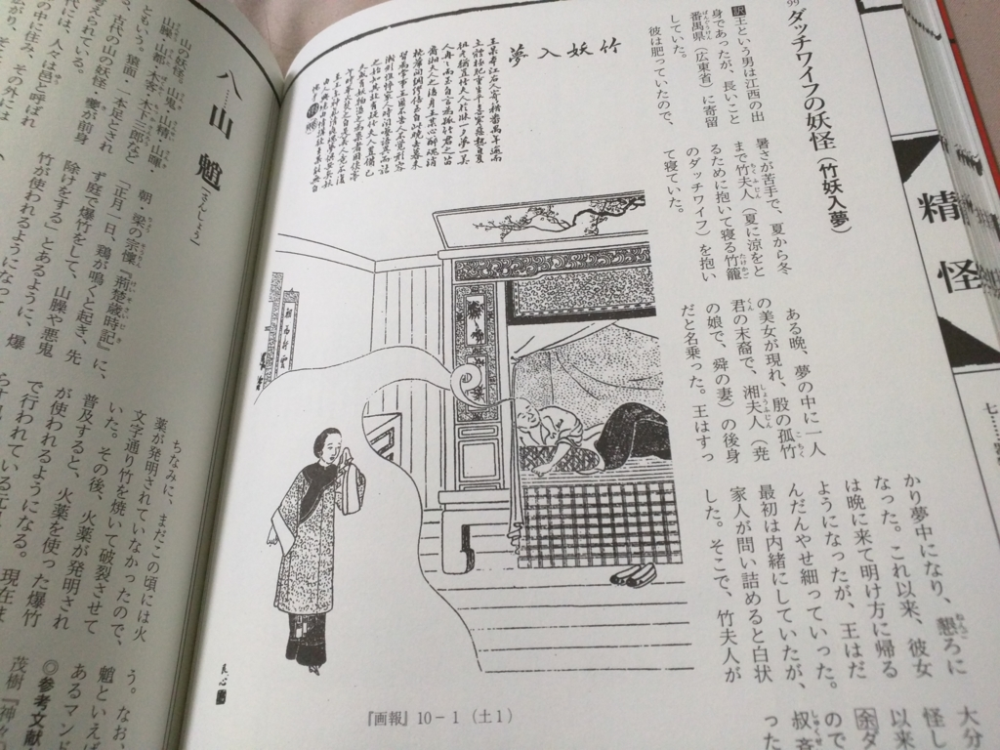

ダッチワイフの妖怪がいるだなんて、たまげたなぁ。
公開日：

中国妖怪・鬼神図譜 清末の絵入雑誌『点石斎画報』で読む庶民の信仰と俗習
- 作者: 相田洋
- 出版社/メーカー: 集広舎
- 発売日: 2016/01/15
- メディア: 新書
- この商品を含むブログ (1件) を見る
孔子さまは「怪力乱神を語らず」なんていったけど、ごめんなさい、今、僕の中では鬼神がマイブーム。
『捜神記』にはビジュアル的なものが一切なかったのがちょっと残念（しゃあないけど）。なので、参考になるかなーと思って、この本を買ってみた。
とくに最初の方の神様のヒエラルキーがお勉強になった。玉帝 → 東岳大帝（泰山府君） → 城隍神 → 土地神みたいな。 ふと、小学校の一年生の頃、4月の誕生日に四巻本のちょっと本格的な『西遊記』を買ってもらったのを思い出した。『西遊記』だと、新しい土地でトラブルに巻き込まれる → 孫悟空がわちゃわちゃするけど解決できない → 土地神を呼び出して解決策を教えてもらう（or 手下としてこき使う） → 妖怪を倒すなりして解決みたいな感じなんよね。最悪の場合、もっと上級の神さまに頼み込んだり（脅すともいう）、仏教の菩薩様の方に手を借りたり（道教系よりもちょっと頼りになったりする）。でも、その頃はそんなヒエラルキーをちゃんとわかってるわけじゃなかった。それぞれ個別に認識はしていたけど、それぞれの関係は把握していなかったみたいな。長年の疑問――とはいえ、誰かに聞いて晴らす必要を感じない程度の小さな疑問――が解消されて、割といい気分だ。
歴史の英雄が神様になる話も面白い。関羽なんかは有名だけど（チャイナタウンによくある関帝廟とか。最近は禅譲を受けて玉帝になっているそうな）、個人的に好きな管仲（春秋・斉国の宰相）や蕭何（漢の相国）なんかも尊敬されて神さまになってたのな。蕭何なんかは、部下だった曾参と一緒に監獄の守護神になってたり。確かに曾参は獄卒だったけど、蕭何はちょっと違うんじゃないか？ 部下のとばっちりを受けた感じもあるけど、それだけ公平な政治が世代を超えて愛されていたってことなんやろうね。
あと面白いのは、なんでも年を経ると不思議な揚力を身に着けるって話。日本にもそういう考え方あるけど（長生きした狐は九尾になるみたいな）。

なかでも愛用していたダッチワイフが妖怪になる話はウケた。ダッチワイフっていっても、涼をとるためにつかった竹籠なんだそうだけどネ。ワイルドだわ。
ちょっと残虐な話や、冥婚（あの世で結婚すること。『捜神記』には死体とセックスする話も出てくる）みたいなちょっと受け入れがたいものも交じってるけど、まぁ、それはそれでそういうものもあるんだな的な。